Герои
ГероиГерои: кого качать и как их получить
Главная ошибка новичков — качать всех понемногу. Выбери 5 героев первого отряда и вкладывай в них. Полностью прокачанный средний герой сильнее наполовину прокачанного лучшего.
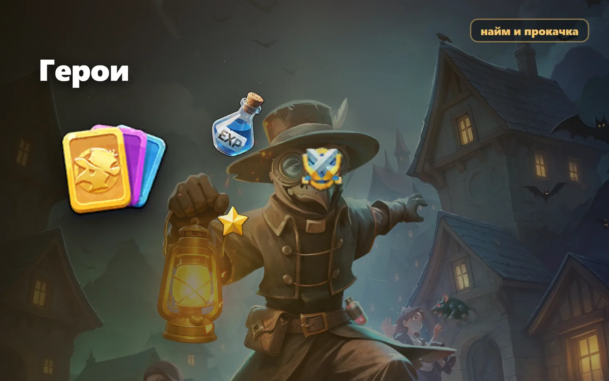
Артур — бесплатно
Главный танк. Первые 50 наймов в Таверне гарантированно дают Артура.

Марлена — платная
Лучший урон в начале. Даётся за первую покупку в игре — набор «Первое пополнение» (около 1 $).
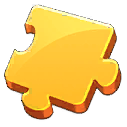
Качай 5, а не всех
Все ресурсы — в героев первого отряда. Остальных не трогай, пока первый отряд не сильный.
День героев
Противоядие, фрагменты, значки навыков и билеты найма копи неделю и трать в четверг.
Герои в 3D
Покрути героя мышкой или пальцем, колёсиком — приблизь. Кнопки под моделью включают движения из игры: покой, атака, навык, ходьба, бег, оглушение, смерть. Нажми на портрет справа или на любой портрет героя ниже — откроется его модель. Все остальные модели игры — на странице «Модели».
Как устроен герой
У каждого героя есть три главные «метки»: редкость (цвет), роль (что он делает в бою) и фракция (его «команда»). Плюс уровень, звёзды, навыки и снаряжение.
Редкость — цвет рамки
- UR Золотой — самые сильные
- SSR Фиолетовый — средние
- SR Синий — слабые, их не качаем
Чем реже герой, тем выше его потолок силы.

Роль — что делает в бою
- Танк — много здоровья, принимает удары, стоит впереди
- Урон — много атаки, мало здоровья, стоит сзади
 Поддержка — усиливает своих, ослабляет врагов, стоит сзади
Поддержка — усиливает своих, ослабляет врагов, стоит сзади
Значок роли — в окне героя рядом с именем.
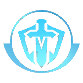
Фракция — его «команда»
- Воины
 Рейнджеры
Рейнджеры Колдуны
Колдуны
Каждая сильнее одной из двух других — как «камень, ножницы, бумага» (схема ниже).
РейнджерКолдунКак получить каждого героя
Новые герои появляются не сразу, а на определённый день жизни сервера. Многие сначала продаются за деньги или крутятся в Рулетке, а потом переходят в обычный найм в Таверне, и их можно получить бесплатно. Дни примерные: на разных серверах ±1–2 дня.
| Герой | Когда появляется | Как получить |
|---|---|---|
| Артур UR Воин, танк | с 1-го дня | Бесплатно. Сначала был платным, потом перешёл в обычный найм. Первые 50 наймов в Таверне гарантируют Артура, дальше — 10 его фрагментов за каждые 50 наймов. |
| Марлена UR Воин, урон | с 1-го дня | Платная: за первую покупку в игре (набор «Первое пополнение», около 1 $). Дальше её фрагменты продаются в ежедневных предложениях. Примерно с 66-го дня появляется в Таверне. |
 Белла SSR Воин, танк Белла SSR Воин, танк | с начала | Бесплатно: её фрагменты продаются в магазине альянса за монеты альянса. |
 Клэр, Клэр, 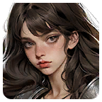 Селия, Сивир SSR Воины Сивир SSR Воины | с 1-го дня | Бесплатно, даются на старте. Клэр в Эре Возрождения можно перевести в золото (UR). |
 Синтия UR Рейнджер, урон Синтия UR Рейнджер, урон | с 8-го дня | В Рулетке (колесе): каждый день бесплатные прокрутки, в конце события докрутить кристаллами до гарантированного выпадения. Потом в основном за донат. Примерно с 66-го дня — в Таверне. |
 Шэдоу UR Рейнджер, танк Шэдоу UR Рейнджер, танк | с 8-го дня | Платный: пропуск примерно за 20 $. Примерно с 66-го дня — в Таверне. |
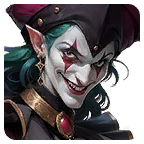 Джестер, Энни UR Колдуны Энни UR Колдуны | с 15-го дня | В Рулетке. Раскрываются только на 9–10 звёздах — бесплатным игрокам лучше пропустить. Примерно с 66-го дня — в Таверне. |
 Харпер UR Воин, поддержка Харпер UR Воин, поддержка | с 22-го дня | Сначала платный (130 фрагментов примерно за 20 $), фрагменты бывают и в карте сокровищ секретных операций. С 31-го дня — в обычном найме в Таверне, бесплатно. |
 Даскал UR Воин, танк Даскал UR Воин, танк | с 29-го дня | Сначала платный. В Эре Возрождения стал доступен бесплатно в Таверне. |
 Красная леди UR Рейнджер, урон Красная леди UR Рейнджер, урон | с 36-го дня | Сначала в продаже. В Эре Возрождения стала доступна бесплатно в Таверне. |
 Ульфрид (Брайан) UR Колдун, танк Ульфрид (Брайан) UR Колдун, танк | с 43-го дня | Платный. Отражает часть урона обратно в атакующего. |
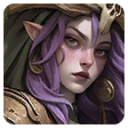 Зоя UR Воин, урон | с 57-го дня | Платная. Усиливает урон Марлены. |
 Луи UR Рейнджер, танк Луи UR Рейнджер, танк | с 64-го дня | Через пропуск. Самый живучий танк игры. |
 Белл UR Рейнджер, поддержка Белл UR Рейнджер, поддержка | с 71-го дня | Платная. «Харпер для Рейнджеров». |
 Билли, Билли,  Николь UR Колдуны Николь UR Колдуны | с 85-го / 99-го дня | Платные. Нужны для полного отряда Колдунов. |
 Гренвальд Гренвальд Стеллар Стеллар Хастар Хастар Гриффит Гриффит Бестар Бестар Луций Луций Кессо Кессо Эш Эш | с начала | Бесплатно: найм в Таверне, события, магазины. Вместо недостающих фрагментов подходят универсальные фиолетовые. |

Найм в Таверне. Билет найма стоит 398 алмазов. На каждом найме есть бесплатная попытка по таймеру. 50-й найм гарантированно даёт 10 фрагментов золотого героя.
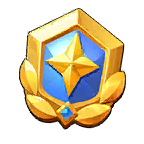
Магазин альянса обновляется каждый понедельник: там золотые фрагменты и фрагменты Беллы. Заходи каждую неделю.
Универсальные фрагменты подходят любому герою своего цвета. Не трать их на первого попавшегося — держи для главного героя.
Рейтинг героев
S — лучшие, C — слабые. Цвет плашки под именем — редкость: UR золотой, SSR фиолетовый, SR синий.
Почему Селия внизу. Её навыки работают против монстров и на сбор ресурсов (больше урона по скверне, до +40% к сбору), а в бою с игроками она почти ничего не добавляет. В рейтинге «для боя» она поэтому низко, но в отряде против скверны и для сбора ресурсов она полезна — см. «Главные герои» ниже. То же с Клэр: внизу по бою, но сильна против монстров.
S Лучшие
A+ Очень сильные
A Сильные
B+ B C Временные и слабые
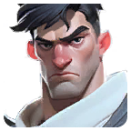
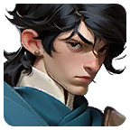


Готовые пути: с кем играть и когда менять героев
«Временный герой» — тот, кого ты поставишь сейчас, а потом заменишь более сильным. В такого героя не вкладывай много значков навыков: хватит прокачать навыки до 8–10 уровня.
| Когда | Танки (впереди) | Урон и поддержка (сзади) |
|---|---|---|
| Дни 1–7 | Артур · Белла | Клэр · Селия (временная) · Сивир (временный) |
| Дни 8–30 | Артур · Белла | Клэр · Селия · лучший фиолетовый |
| С 31-го дня | Артур · Белла | Клэр · Селия · Харпер (появился в Таверне) |
| Позже | Артур · Даскал (бесплатно в Таверне после Эры Возрождения) | Марлена (когда появится в Таверне) · Клэр · Харпер |
Белла — второй танк надолго: она в рейтинге выше Луция (A+ против B+), а её фрагменты бесплатно продаются в магазине альянса. Её меняют только на золотого танка — Даскала. Луций — запасной танк, если Беллы ещё нет.
Как копить на Марлену бесплатно, по-простому. Марлена появится в Таверне примерно на 66-й день. Чтобы сразу сделать её сильной, нужно около 975 золотых фрагментов. Значит: золотые универсальные фрагменты, которые получаешь, не трать все. Половину вкладывай в Артура и Харпера, половину откладывай. Когда Марлена появится, вложи накопленное в неё.
| Когда | Танки (впереди) | Урон и поддержка (сзади) |
|---|---|---|
| Дни 1–7 | Артур · Белла | Марлена · Клэр · Селия |
| С 31-го дня | Артур · Белла | Марлена · Харпер · Клэр |
| Дальше | Артур · Даскал | Марлена · Харпер · Красная леди или Клэр |
Все золотые фрагменты в первую очередь — Марлене, до 10 звёзд. Харпера подними до 8 звёзд, когда Марлена уже на 10: у него откроется навык, который на 10% ускоряет навыки всего отряда.
Игроки, которые тратят больше, советуют уже в середине игры переходить на Рейнджеров: к концу они сильнее Воинов даже против полностью прокачанных Воинов.
| Состав | Герои |
|---|---|
| Дни 8–30 | Артур · Шэдоу · Марлена · Клэр · Синтия |
| Полный отряд Рейнджеров | Луи · Шэдоу · Синтия · Белл · Красная леди |
| Потом — Колдуны | Ульфрид · Билли · Энни · Николь · Джестер |
Выбирай одну фракцию и не прыгай между ними: распылять ресурсы на три отряда — самый медленный путь.
Как прокачивать героя: 4 вещи
Всё это — в окне героя: на главном экране слева внизу кнопка «Герой» → нажми на нужного героя.

Окно героя. Рамки: снаряжение, «Улучшить», «Звезды» и «Навык».

1. Уровень
Кнопка «Улучшить» под характеристиками. Качается противоядием — на кнопке видно, сколько его есть и сколько нужно (красное число — не хватает). Даёт атаку, здоровье, защиту и лидерство. Потолок уровня зависит от Святилища: Святилище 20 — герой до 100 уровня, Святилище 30 — до 150.

2. Звёзды
Вкладка «Звезды» внизу окна. Качаются фрагментами  этого героя (картинка с его лицом) или универсальными. Звёзды открывают новые навыки и сильно поднимают силу. После 4-й звезды герой заметно крепнет.
этого героя (картинка с его лицом) или универсальными. Звёзды открывают новые навыки и сильно поднимают силу. После 4-й звезды герой заметно крепнет.
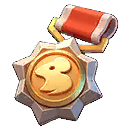
3. Навыки
Вкладка «Навык» внизу окна. Качаются значками навыков . Поднимают цифры навыков: урон, щиты, усиления. Значков всегда мало — главному герою урона в первую очередь.

4. Снаряжение
Четыре клетки по бокам героя: слева меч и наручи, справа броня и сапоги. Серая клетка с силуэтом — вещь не надета, нажми на неё, чтобы надеть. Подробно — в разделе Снаряжение.
Порядок — по шагам
Между 9 и 10 звёздами огромная разница: на 10 все его навыки становятся максимальными. Остальных героев отряда достаточно поднять до 8 звёзд. Учти: дорога от 0 до 8 звёзд стоит примерно столько же, сколько от 8 до 10.
Кроме первого навыка у танков и поддержки: это их обычная атака, им урон не важен.
Потом поддержка, потом танки (у танков — защитные навыки, а не атаку). У фиолетовых героев навыки против монстров не качай, кроме Клэр и Селии.
Фрагменты, значки, противоядие и билеты найма копи с прошлого четверга и трать в день героев Дуэли. Противоядие — в раунд «Усиление героев» Битвы на выживание.

Пробуждение. Марлена, Синтия и Энни после 10 звёзд можно «пробудить» особыми фрагментами: растут характеристики и навыки. Даскал, Луи и Ульфрид получили своё оружие, которое тоже их усиливает.
Откуда брать противоядие

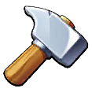


Главные герои — коротко и понятно
Это не «лучшие по рейтингу», а герои, которых чаще всего качают на старте: их можно получить бесплатно или в первые дни (Артур, Белла, Клэр, Селия — с первых дней; Харпер — в Таверне с 31-го дня; Марлена и Синтия — за покупки) и на них строятся отряды из раздела «Отряды». У каждого написано, за что его берут.
Артур — главный танк
Снижает урон по всем танкам отряда, ставит себе щит, а его главный удар бьёт всех рядом и снижает урон по своим. Ставится на место 1 — туда бьют сильнее всего. Первый герой, в которого вкладываться.
Марлена — главный урон
Самый сильный урон на старте. Бьёт энергетическим уроном по площади, сама его усиливает и быстрее перезаряжает навыки. Хороша и против людей, и против монстров.
Харпер — усиление Воинов
Поднимает атаку всем героям отряда и отдельно всем Воинам. Рядом с Артуром и Марленой — огромная прибавка. С 31-го дня бесплатно в Таверне.
Белла — бесплатный танк
Фрагменты — в магазине альянса. Снижает урон от монстров по своим, её удар ослабляет атаку врагов. Временная: потом её заменят Луций или Даскал.
Клэр — против монстров
Трём самым сильным Воинам отряда добавляет около 15% урона по монстрам. Незаменима на Короле демонов. Можно перевести в золото (UR) в Эре Возрождения.
Селия — больше ресурсов
Даётся на старте. Добавляет урон по монстрам и до 40% ресурсов с ресурсных и элитных монстров. Временная.
Синтия — урон Рейнджеров
Бьёт всех врагов в зоне, сама повышает себе шанс крита. Для Короля демонов у бесплатного Рейнджера — лучший выбор.
Даскал — второй танк Воинов
Ставит щиты всему отряду и лечит себя. Вместе с Харпером отряд живёт намного дольше. Ему сразу делай меч и наручи — его лечение зависит от атаки.
Гренвальд — урон без золота
Лучший фиолетовый по урону, особенно по монстрам. Сам хрупкий — только за спиной танка. Замена Марлене, если её нет.
Как не слить ресурсы
Пять героев на 50% слабее трёх на 100%. Сначала первый отряд.
Если Марлена есть — почти все универсальные золотые фрагменты сначала ей, до 10 звёзд.
Белле, Сивиру и Селии хватит навыков 8–10 уровня.
Танкам качай защитные навыки и щиты: они побеждают тем, что живут, а не тем, что бьют.
В четверг те же фрагменты дали бы очки Дуэли.
Первые уровни строятся секунды. Алмазы — на найм героев.